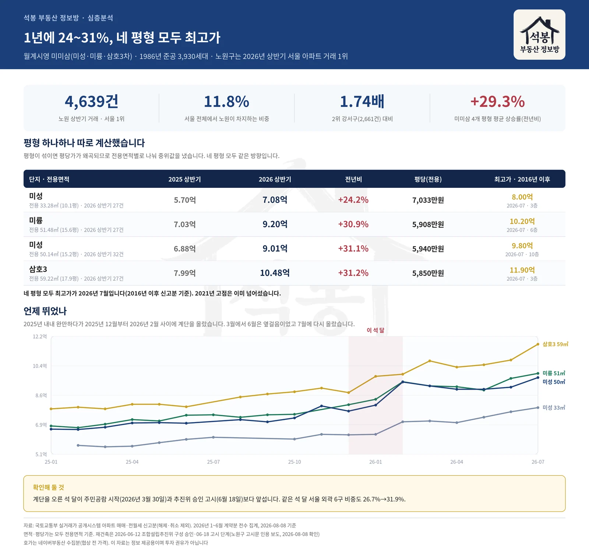
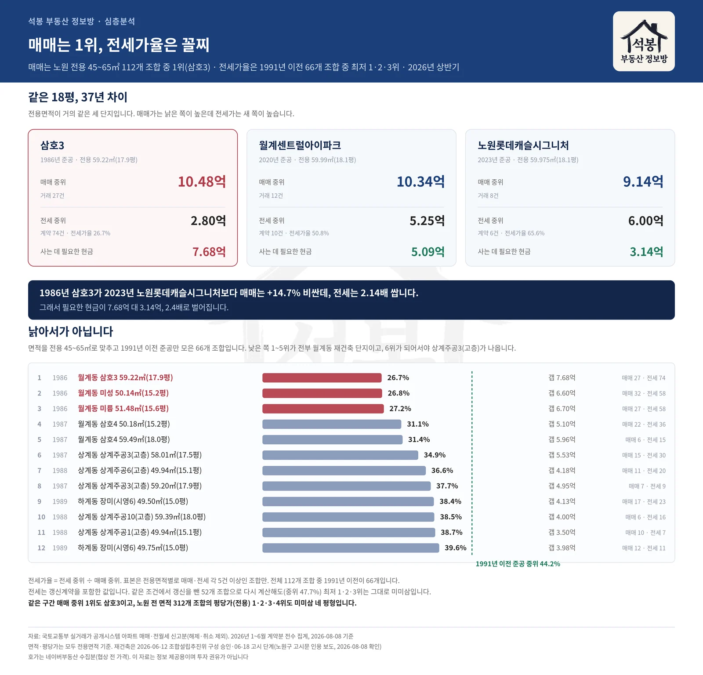

노원구가 2026년 상반기 서울 아파트 거래 1위입니다. 4,639건, 서울의 11.8%. 그 안에서 평당 가격이 가장 높은 넷을 뽑아 봤더니 1위부터 4위까지가 전부 월계동 미미삼이었습니다. 신축이 하나도 없습니다. 1986년에 지은 아파트가 네 자리를 다 가져갔고, 그 네 평형이 1년 만에 24에서 31% 올랐습니다.
미미삼이 무엇인가
정식 이름은 월계시영아파트입니다. 1986년 6월에 준공된 3,930세대 대단지인데, 32개 동을 세 건설사가 나눠 지었습니다. 1~16동이 미성, 17~23동이 미륭, 24~32동이 삼호3차입니다. 세 이름의 앞글자를 따서 동네에서는 미미삼이라고 부릅니다. 시행사가 서울시였습니다.
2023년에 재건축 정밀안전진단을 통과했고 2025년에 신속통합기획 자문을 신청했습니다. 정비계획안 주민공람은 올해 3월 30일부터 5월 6일까지였습니다. 그리고 노원구가 6월 12일 조합설립추진위원회 구성을 승인해 18일 고시했습니다. 위원장 김태영씨에 추진위원 128명, 구역 면적 232,298.6㎡, 토지등소유자 3,986명. 다음은 조합설립인가입니다. 사업 이름은 월계시영고층아파트 재건축사업입니다.
계획대로면 3,930세대가 6,103세대로 늘어납니다. 2,173세대가 순증하고 최고 50층까지 올라갑니다. 용도지역은 3종일반주거에서 일부 준주거로 올리고 사업성보정계수는 최대치인 2를 받습니다. (추진위 고시 내용과 세대수는 위클리한국주택경제신문 2026년 6월 23일자, 공람 일정과 종상향은 시정일보 4월 16일자 보도입니다.)
사실 이 동네가 저한테는 좀 각별한데, 십 년쯤 전에 네이버 부동산 현장확인 아르바이트를 할 때 월계동이 제 담당이었거든요. 매물 하나하나 발로 확인하러 다니다 보면 중개사무소에 앉아 커피를 얻어 마시게 되는데, 그러면 어김없이 재건축 얘기가 나왔습니다. 곧 된다, 이번엔 진짜다. 그 말을 몇 번이나 들었는지 모릅니다.
그러고 십 년이 지난 다음에 추진위원회가 꾸려졌는데, 반갑기도 하지만 솔직히 얘기해서 조금 쓰립니다. 2017년 상반기만 해도 미성 전용 50.14㎡(15.2평)가 3.10억이었는데 지금은 9.01억이니까요. 그때 살걸, 이라는 말이 이럴 때 쓰는 말이구나 싶습니다.
여기서부터는 회원에게 보여드립니다
카카오 로그인 3초면 전문을 읽을 수 있습니다. 무료입니다.
가입하시면 지역 시장조사 보고서(약식)를 2회 무료로 요청하실 수 있습니다.
이미 회원이면 같은 버튼으로 로그인만 됩니다
평당가 1~4위
단지 단위로 평당가를 내면 어느 평형이 많이 팔렸느냐에 따라 값이 흔들립니다. 그래서 단지와 전용면적을 짝지어 쪼갰습니다. 올해 상반기에 5건 이상 거래된 노원구 312개 조합을 평당가로 줄 세운 결과입니다.
순위
단지 · 전용면적
준공
평당(전용)
1
월계동 미성 전용 33.28㎡(10.1평)
1986년
7,033만원
2
월계동 미성 전용 50.14㎡(15.2평)
1986년
5,940만원
3
월계동 미륭 전용 51.48㎡(15.6평)
1986년
5,908만원
4
월계동 삼호3 전용 59.22㎡(17.9평)
1986년
5,850만원
5
월계동 월계센트럴아이파크 전용 59.99㎡(18.1평)
2020년
5,698만원
1위부터 4위까지가 전부 미미삼입니다. 5위가 되어서야 2020년 준공 신축이 나옵니다.
1년에 30%

단지 · 전용면적
2025 상반기
2026 상반기
전년비
평당(전용)
역대 최고가
미성 전용 33.28㎡(10.1평)
5.70억 23건
7.08억 27건
+24.2%
7,033만원
8.00억 2026-07
미륭 전용 51.48㎡(15.6평)
7.03억 27건
9.20억 27건
+30.9%
5,908만원
10.20억 2026-07
미성 전용 50.14㎡(15.2평)
6.88억 26건
9.01억 32건
+31.1%
5,940만원
9.80억 2026-07
삼호3 전용 59.22㎡(17.9평)
7.99억 30건
10.48억 27건
+31.2%
5,850만원
11.90억 2026-07
네 평형이 모두 7월에 최고가를 찍었습니다. 2021년 고점은 진작 넘었습니다. 삼호3차 전용 59.22㎡(17.9평)가 7월 15일 3층에서 11.90억. 이 단지 기록입니다. 미성 전용 50.14㎡(15.2평)의 9.80억은 2월에 한 번 나왔던 값과 같습니다.
언제 뛰었나
2025년은 내내 완만했습니다. 계단을 오른 건 그해 12월부터 올해 2월까지 석 달입니다. 거래가 13건으로 넉넉했던 2025년 10월에 미성 전용 50.14㎡(15.2평)가 7.28억이었는데 2월에 9.44억이 됐습니다. 3월부터 6월은 옆걸음, 7월에 한 번 더 올랐습니다.
월별로 보면 거래가 한두 건뿐인 달이 섞여 있습니다. 그런 달의 중위값은 크게 흔들립니다. 한 달 숫자보다 몇 달의 방향으로 보시는 편이 낫습니다.
계단을 오른 석 달은 주민공람이 시작된 3월 30일보다도 앞섭니다. 그렇다고 재건축과 무관하다는 뜻은 아닙니다. 2023년 진단 통과에 2025년 신통기획 자문 신청까지, 기대는 진작부터 쌓여 있었으니까요.
같은 석 달 서울 외곽 6구(노원·도봉·강북·금천·관악·구로)의 거래 비중도 26.7%에서 31.9%로 올랐습니다. 대출을 죄자 매수세가 외곽으로 밀려간 그 흐름입니다. 재건축 기대와 외곽 이동 중 어느 쪽이 얼마나 밀었는지는 저희 자료로 가를 수 없습니다. 시점만 적어 둡니다.
같은 18평, 37년 차이
전용면적이 거의 같은 세 단지입니다. 준공 연도만 37년 벌어져 있습니다.

단지
준공
매매 중위
전세 중위
전세가율
필요한 현금
삼호3 전용 59.22㎡(17.9평) · 매매 27건 · 전세 74건
1986년
10.48억
2.80억
26.7%
7.68억
월계센트럴아이파크 전용 59.99㎡(18.1평) · 매매 12건 · 전세 10건
2020년
10.34억
5.25억
50.8%
5.09억
노원롯데캐슬시그니처 전용 59.975㎡(18.1평) · 매매 8건 · 전세 6건
2023년
9.14억
6.00억
65.6%
3.14억
1986년 삼호3가 2023년 노원롯데캐슬시그니처보다 매매는 +14.7% 비쌉니다. 전세는 거꾸로 새 아파트가 2.14배입니다. 그래서 손에 쥐고 있어야 할 현금이 7.68억 대 3.14억, 2.4배로 벌어집니다.
노원 전용 45~65㎡ 112개 조합에서 매매 중위가 1위도 삼호3차입니다. 신축까지 넣고 그렇습니다.
낡아서가 아닙니다
낡으면 원래 전세가 안 나간다고들 합니다. 그 말이 맞는지 보려고 면적을 전용 45~65㎡로 맞추고 1991년 이전에 지은 단지만 66개 조합 줄 세웠습니다. 또래끼리 붙여 본 셈입니다.
순위
준공
단지
매매
전세
전세가율
갭
1
1986
월계동 삼호3 전용 59.22㎡(17.9평) · 매매 27건 · 전세 74건
10.48억
2.80억
26.7%
7.68억
2
1986
월계동 미성 전용 50.14㎡(15.2평) · 매매 32건 · 전세 58건
9.01억
2.41억
26.8%
6.60억
3
1986
월계동 미륭 전용 51.48㎡(15.6평) · 매매 27건 · 전세 58건
9.20억
2.50억
27.2%
6.70억
4
1987
월계동 삼호4 전용 50.18㎡(15.2평) · 매매 22건 · 전세 36건
7.40억
2.30억
31.1%
5.10억
5
1987
월계동 삼호4 전용 59.49㎡(18.0평) · 매매 6건 · 전세 15건
8.69억
2.73억
31.4%
5.96억
6
1987
상계동 상계주공3(고층) 전용 58.01㎡(17.5평) · 매매 15건 · 전세 30건
8.50억
2.97억
34.9%
5.53억
7
1988
상계동 상계주공6(고층) 전용 49.94㎡(15.1평) · 매매 11건 · 전세 20건
6.60억
2.42억
36.6%
4.18억
8
1987
상계동 상계주공3(고층) 전용 59.2㎡(17.9평) · 매매 7건 · 전세 9건
7.95억
3.00억
37.7%
4.95억
전세가율 최저 1·2·3위가 전부 미미삼입니다. 또래 중위가 44.2%인데 미미삼은 26.7에서 27.2%. 절반을 조금 넘습니다. 사는 데 드는 현금 순위도 똑같이 1·2·3위입니다.
정확히는 미미삼만이 아닙니다. 낮은 쪽 1위부터 5위까지가 전부 월계동 재건축 단지입니다. 미미삼 셋 뒤로 삼호4차가 둘 붙습니다(31.1%, 31.4%). 삼호4차 역시 공람을 거쳐 추진위원회 승인까지 갔습니다. 6위가 되어서야 상계주공3(고층)(34.9%)가 나옵니다.
바로 옆 상계주공과 견줘 보면 차이가 뚜렷합니다. 같은 면적대 상계주공 37개 조합은 34.9에서 61.2%에 퍼져 있고 중위가 43.5%입니다. 1987년에서 1989년 사이에 지었으니 연식은 미미삼과 고만고만합니다. 낡아서 생긴 일이 아니라, 재건축이 눈앞인 월계동에서 벌어지는 일입니다.
갱신계약이 섞여 값이 눌린 것은 아닐까요. 전월세상한제 탓에 갱신은 시세보다 낮게 찍히니 그럴 만합니다. 같은 조건에서 갱신을 빼고 다시 셌더니 52개 조합 중위가 47.7%로 올라갔고 미미삼은 28.6에서 30.5%가 됐습니다. 숫자는 움직였는데 순위는 그대로 1·2·3위입니다.
사기 전에 볼 것
현금이 많이 듭니다. 삼호3차 전용 59.22㎡(17.9평)를 전세 끼고 사려면 7.68억이 있어야 합니다. 노원 같은 면적대 중위가 3.0억 안팎이니 두 배를 넘습니다.
호가는 실거래보다 위에 있습니다. 7월 25일 수집분 기준 전용 59㎡(17.9평) 매매 호가 중위가 12.20억. 같은 달 실거래 최고가 11.90억보다 높습니다. 호가는 협상 전 가격이라 체결가와는 다릅니다.
재건축은 아직 중간입니다. 추진위원회가 6월에 승인됐고 조합설립인가가 다음, 그 뒤로 사업시행인가와 관리처분인가가 남았습니다. 6,103세대도 50층도 공람안의 숫자라 심의에서 달라질 수 있습니다. 일정이 밀리면 현금이 묶이는 기간도 그만큼 늘어납니다.
정리하면
노원이 상반기 서울 거래 1위가 됐습니다. 4,639건, 2위 강서구(2,661건)의 1.74배입니다. 상반기 기준으로 2024년 2위, 2025년 3위를 거쳐 올라왔고 연간으로 세면 2025년에 이미 1위였습니다.
그 안에서 평당 가격 상위 네 자리를 1986년생이 채웠습니다. 1년에 24에서 31%, 최고가는 넷 다 7월입니다.
매매가는 그 면적대 노원 1위인데 전세가율은 또래 중 꼴찌입니다. 지금 살기 위한 값보다 나중을 위한 값이 크게 얹혀 있다는 뜻입니다. 그만큼 현금이 많이 들고, 일정이 밀리면 그 현금이 묶이는 기간도 길어집니다. 십 년을 기다린 동네니 그 시간이 얼마나 더 걸릴지는 아무도 모릅니다.
원자료: 국토교통부 실거래가 공개시스템(아파트 매매·전월세, 해제·취소 제외) · 시세는 2026년 1~6월 계약 신고분 전수, 최고가와 월별 추이는 7월 계약분까지 · 기준일 2026-08-08 · 면적과 평당 단가는 전용면적 기준 · 전세가율은 같은 기간 전세 중위 보증금을 매매 중위가로 나눈 값으로 갱신계약 포함(갱신을 뺀 값은 본문에 별도 표기) · 단지 정보(세대수·준공·시공사)는 공동주택 단지정보 및 언론 보도 · 정비사업 단계는 서울시 정비사업 정보몽땅 직접 조회(2026-08-08 기준 추진위원회승인)와 노원구 고시문 인용 보도이며 세대수·층수는 공람안이라 변동 가능 · 호가는 네이버부동산 수집분(2026-07-25, 협상 전 가격) · 편집·제작: 석봉 부동산 정보방 · 본 자료는 정보 제공 목적이며 투자 권유가 아닙니다.